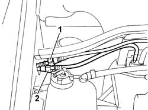
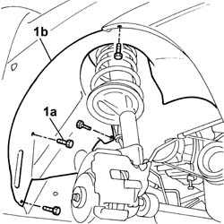
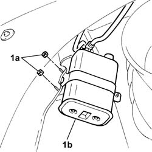
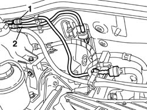

1080E20 active carbon filter for fuel vapours - r + r
- Path
- Procedures > 10 ENGINE > 1080 EMISSION CONTROL SYSTEM > 1080E EVAPORATION CONTROL SYSTEM > 1080E20 active carbon filter for fuel vapours - r + r
- Kind
- repair procedure (removal / refitting; the operation number is the code)
- Applies to
- engines: 1.2 8v, 1.4 8v, 1.6 16v; all production periods
- Interactive page
- https://sloeber94.github.io/elrnDB-fDbl/en/#/2584280
Applies to: engines: 1.2 8v; all production periods
 Removing
Removing
 Refitting
RefittingPlace the car on a ramp.
Op. 7055B54 PROTECTION/GUARD UNDER ENGINE - R.R.
Disconnect the battery negative terminal.
1. Disconnect the pipe from the fuel vapour recovery solenoid.
2. Disconnect the anti-evaporation pipe from the fuel vapour separator.

Applies to: engines: 1.2 8v; all production periods
Op. 4450B04 RIGHT FRONT WHEEL - R.R.
1. Undo the fixing bolts (1a) and move the free side of the wheel housing dust shield (1b), to gain access to the charcoal filter.

Applies to: engines: 1.2 8v; all production periods
1. Undo the fixing nuts (1a) and remove the active charcoal filter (1b).

Applies to: engines: 1.2 8v; all production periods
Refitting
RemovingFit the active charcoal filter and tighten the fixing nuts to torque.
 | Fastening | Component | Ø | Value (daNm) |
|---|---|---|---|---|
- | Nut | FUEL VAPOUR ACTIVE CARBON TRAP FILTER | M6 | 0.85 |
Position the dust shield and tighten the fixing bolts.
Op. 4450B04 RIGHT FRONT WHEEL - R.R.
Op. 7055B54 PROTECTION/GUARD UNDER ENGINE - R.R.
Completely lower the lift.
Connect the pipes to the fuel vapour recovery solenoid valve and the fuel vapour separator.
Connect the battery negative terminal.
Remove the vehicle from the ramp.
Applies to: engines: 1.4 8v, 1.6 16v; all production periods
Removing
RefittingPlace the car on a lift.
Disconnect the battery negative terminal.
1. Disconnect the pipe from the fuel vapour recovery solenoid.
2. Disconnect the anti-evaporation pipe from the fuel vapour separator.

Applies to: engines: 1.4 8v, 1.6 16v; all production periods
Op. 4450B04 RIGHT FRONT WHEEL - R.R.
1. Undo the fixing bolts (1a) and move the free side of the wheel housing dust shield (1b), to gain access to the charcoal filter.
Applies to: engines: 1.4 8v, 1.6 16v; all production periods
1. Undo nuts (1a) and remove the active charcoal filter (1b).
Applies to: engines: 1.4 8v, 1.6 16v; all production periods
Refitting
RemovingFit the active charcoal filter and tighten the fixing nuts to torque.
| Fastening | Component | Ø | Value (daNm) |
|---|---|---|---|---|
- | Nut | FUEL VAPOUR ACTIVE CARBON TRAP FILTER | M6 | 0.9 |
Position the dust shield and tighten the fixing bolts.
Op. 4450B04 RIGHT FRONT WHEEL - R.R.
Completely lower the lift.
Connect the fittings on the pipes to the fuel vapour recovery solenoid valve and the fuel vapour separator.
Connect the battery negative terminal.
Remove the vehicle from the ramp.